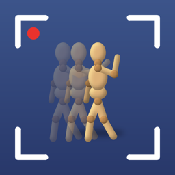

Stutter Shot StudioHelp
How to use Stutter Shot Studio
Stutter Shot Studio captures an animation a frame at a time on iPad, Mac or iPhone, with the camera's settings held steady between frames, earlier frames ghosted over the camera, and optional reference video and sound to animate to.
Getting started
- Open the app. The project list shows your projects, most recent first.
- Click New Project (+). It opens in the studio.
- Pose your scene and press Capture (the big red button, or Space). Move things a little, capture again, and repeat.
- Press Play (P) to watch it.
Projects save as you work; there's no Save command. Undo (⌘Z) covers everything you do to frames.
To rename a project, click (tap) its title at the top of the studio, or right-click (long-press) it in the list. Delete it from the same menu.
The studio
Three workspaces, switched at the top (⌘1, ⌘2, ⌘3), each with its own controls:
- Shoot: the camera, onion skin, camera settings, hands-free capture, and the big red Capture button.
- Frames: a frame on the stage, with its hold, Reshoot, Duplicate, Delete, Deflicker and Clean. Clicking a frame in the strip while shooting brings you here.
- Movie: the whole film: frame rate, crop and moving crop, and Export. The stage shows frames as they'll export.
To go back to the camera from Frames or Movie, choose Shoot at the top, or press Return.
- The stage, at the top, shows the camera with earlier frames ghosted over it. When you pick a frame, the stage shows that frame instead.
- The control bar holds everything you need while shooting, each control named underneath. On iPad it's a rail beside the stage; right-click or long-press the rail to move it to the other side. On iPhone the bar keeps the camera, play and capture, and everything else is in the ⋯ menu. Turn an iPhone on its side and the stage takes the full height, with the controls down one side (long-press them to swap sides); the frames show down the other side while editing, and elsewhere a swipe across the stage steps through them. From left to right:
- Auto (the lock) and Camera, the camera settings panel, which also picks the camera and lens.
- Onion: click to switch the onion skin on or off; the small arrow beside it opens its settings. The slider sets its strength.
- Reference: the reference videos panel.
- Deflicker and Clean (below).
- Frame rate (in Movie).
- Capture in the middle while shooting, with Hands-Free (below) and Play to its right. In Frames and Movie, Play is in the middle.
- The frame on the stage: how long it holds (the hourglass), Reshoot, and Live.
- Import and Export (in Frames). Movie has Export.
- Panels open beside the stage, in the black space, so they don't cover the picture. On iPad they open on the rail's side; held upright, an iPad or iPhone opens them under the stage, which shrinks to keep the whole picture in view. Close one with the ✕ in its header, or its button again.
- When you're looking at a frame rather than the camera, the stage has a blue edge (orange while reshooting).
- Tips appear in a strip under the stage, never over the picture.
- The frame strip runs along the bottom. Each frame is numbered, and a held frame shows ×2, ×3 and so on. While the movie plays, a red playhead marks the frame on the stage, and the strip follows it.
- The reference bar, under the strip, appears once you've added a reference (see below).
Shooting
Where captures go. New frames go at the end. To add frames somewhere else, click the frame they should follow: captures then go in after it and keep going in from there. A thin bar in the strip marks the spot. Press Return (or click Live) to go back to the camera.
The camera lock. On the first capture of a project, exposure, focus and white balance lock, so frames don't flicker as the light or the camera's automatic settings drift. The lock button shows whether they're locked; click it to go back to automatic, or to lock them again at the current values. The locked settings are saved with the project and come back when you reopen it, on the same camera.
Which camera. Choose it from the camera menu on the bar. The choices are:
- the built-in camera;
- a USB camera;
- an iPhone nearby in camera mode (see below).
Stutter Shot Studio goes back to the camera you used last whenever it's available.
Cameras and lenses. The Camera picker at the top of the camera settings panel lists every camera, and each lens of the one in use (Back Camera 0.5×, 1×, 5×), in one list. On iPhone, the bar also has a button per lens.
The camera settings panel (the aperture button) shows the manual controls the camera supports. It covers exposure, ISO, shutter speed, aperture, focus and white balance, each automatic or set by hand. The panel also has:
- Click on Image: choose whether a click on the live picture sets focus there, exposure there, both, or nothing. The setting stays put after a click.
- Pick (the target or dropper beside Focus, Exposure and White Balance): sets just that one from the next click on the picture. For white balance, click something that should be white or grey.
- Stills: the size and colour depth frames are kept at. New projects keep 4K stills (the camera's smallest size that's at least 3,840 pixels long, about 12 MP on an iPhone) in 10-bit colour, made from the camera's RAW, where the camera has one. Choose a bigger size (24 or 48 MP on recent iPhones) for room to crop and zoom in Movie; files grow with it. 8-bit keeps the camera's own processed picture. Pick these before the first frame, since frames shot differently won't quite match. A Mac's camera gives 8-bit only.
- Focus Pull: focus moves smoothly from one point to another over a number of frames. To set one up:
- Focus on the first subject and click Set under Start.
- Focus on the second subject and click Set under End.
- Choose how many frames the pull takes, and its motion (steady, or easing in and out).
- Click Start Focus Pull. Each capture then moves the lens a step on, and the stage badge counts the frames. Check moves the lens to a mark without capturing, and End Focus Pull stops early.
Reshooting a frame from a focus pull puts the lens back where that frame was focused.
The Mac's Continuity Camera doesn't let apps change any of these settings. To have manual control on a Mac, use the iPhone as a camera through Stutter Shot Studio instead (below).
Onion skin
Earlier frames show faintly over the camera, so you can see how far things have moved.
- O turns it on and off. The slider on the bar sets how strong it is.
- The onion panel sets how many earlier frames show ([ and ]) and how quickly they fade.
- Difference (D) shows only what's changed since the last frame: what matches goes black and what moved shows bright. It's useful for spotting a bumped set or a puppet that slipped.
Reviewing and editing frames
- Click a frame to show it on the stage. ← and → step through frames, and ⇧← / ⇧→ jump 10. Home and End go to the first and last frame. You can also swipe across the stage.
- Select several frames: in Frames, the selection is boxed in yellow, as in a video editor. Drag the handle at either end of the box to take in more frames or fewer; the stage shows the frame at the end you're dragging. You can also shift-click to select a range, or on iPad and iPhone tap Select at the start of the strip, tap the frames, then Done.
- Hold a frame longer: H adds an exposure and ⇧H takes one away. Or click Hold (the hourglass) on the bar: − and + step it, or type how long, in frames or seconds; seconds round to whole frames at the project's frame rate. With several frames selected, it sets them all. A held frame plays for longer without being copied. Use it for pauses.
- Reshoot (R): the camera comes back with the frames either side ghosted, and the next capture replaces the frame.
- Duplicate (⌘D), Move Earlier / Later (⌘← / ⌘→), or drag frames in the strip to reorder them.
- Delete (⌫).
- Right-click (long-press) a frame for all of these, and for Share Frame.
Undo and Redo (⌘Z, ⇧⌘Z) work for every frame edit.
Playback
P plays and stops, and L switches between looping and playing once. The frame rate menu on the bar sets frames per second; a project's speed can change at any time.
Using an iPhone as the camera
An iPhone running Stutter Shot Studio can be the camera for a studio on your iPad or Mac. You get its full manual controls, all of its lenses, and full-resolution stills.
- On the iPhone, open Stutter Shot Studio and tap Use as Camera.
- On the iPad or Mac, choose the iPhone from the camera menu, or tap Use on the banner that appears.
- The first time, tap Allow on the iPhone. It won't ask that studio again.
The iPhone shows what it sees with the onion frame over it, and has its own shutter button. Both devices need to be on the same Wi-Fi, or near each other. If the connection drops, the studio reconnects by itself. Frames the iPhone captured while the connection was down are sent when it's back. Tap Done on the iPhone to leave camera mode.
Reference videos and sound
A reference is a video or sound you animate to: live-action footage of the movement, dialogue for lip sync, or music.
To add a reference:
- Click the film button on the control bar to open the Reference panel.
- Click Add Video or Sound… and pick a file. On iPhone and iPad you can also use Add from Photos….
- Wait a moment while it's prepared. A sound file on its own works too.
To film a reference yourself: click Record with Camera in the Reference panel, act the movement out in front of the camera, and click Stop. It's recorded with the current camera and its microphone, then added as a reference. With an iPhone as the camera, the iPhone records, and the movie is sent over when you stop. The first time, you'll be asked to allow the microphone. Frames can't be captured while recording.
The reference shows over the stage at the moment that lines up with the frame you're on, or the frame you're about to capture. In playback it plays along with the animation.
Several references. Add as many as you like: for example, a video of the movement plus a separate dialogue recording. They're listed in the panel.
- Selecting one: click a reference to select it. The panel's settings, the reference bar and the stage handles work on the selected reference.
- Show and mute: the eye shows or hides a reference on the stage, and the speaker mutes its sound.
- Order: the last reference in the list is drawn on top.
Lining it up on the stage. Turn on Adjust on Stage in the panel, or right-click the film button and choose Adjust on Stage. Yellow handles appear:
- drag the picture to move it;
- drag a corner to distort it, so it matches the angle of your set;
- drag the round handle to resize and rotate it, or pinch and rotate with two fingers;
- Flip mirrors it, and Reset puts it back to fitting the stage;
- click Done (or press Esc) when it lines up.
Each adjustment can be undone. Opacity sets how strongly it shows, and V shows or hides the selected reference.
Lining it up in time. The bar under the frame strip shows the whole reference, with its sound as a waveform. The highlighted stretch is the part your animation covers, and the yellow line is the frame you're on. You can:
- drag the highlighted stretch to slide the reference against the animation;
- press ⌥← and ⌥→ to move it by one frame;
- use the arrows under Timing in the panel, which also show where frame 1 falls.
Sound.
- Stepping: stepping through frames plays exactly that frame's slice of sound, which is how you find the frame where a word starts.
- Playback: the sound plays along with playback.
- Settings: both can be turned off in the panel, under All Sound.
- Export: Include Sound in Exported Video puts the reference's sound under the exported movie. Several references' sounds are mixed into one track.
Deflicker
When brightness jumps from frame to frame, the playback flickers. This happens when a camera won't lock (many webcams), when daylight comes and goes through a window, or when a lamp warms up. Deflicker evens it out.
- Click Deflicker on the control bar.
- Choose the frames. It works on all of them, or only on the frames selected in the strip (shift-click to select a range).
- Check the region. It measures the left and right edges of the frame by default. If your puppet moves through those, turn on Edit Region on Stage and mark parts of the set that never move or change:
- drag on the stage to add a box;
- drag a box to move it;
- click a box's × to remove it.
- Read the chart. It shows each frame's brightness before (grey) and after (blue). A jagged grey line is flicker. A smooth rise or fall is kept, since that's probably intentional.
- Adjust. Smoothing sets how many frames the light is averaged over, and Strength how much is corrected.
- Apply. Click Apply to … Frames. Corrected frames show a wand in the strip.
- Compare. Press and hold Hold to See the Original.
Corrections never change your original images. They're applied when frames are shown and exported, and can be undone. Remove from These Frames takes them off. Reshooting a frame removes its correction. Image exports have an Apply Deflicker switch.
Crop and moving crop
In Movie, Crop frames the film: turn on Crop the Movie and choose a shape (16:9, 4:3, square, 9:16, 2.39:1, or the frames' own). On the stage:
- drag inside the crop to move it;
- drag its corner to zoom;
- drag the round handle above it to turn it. It snaps level near 0° and 90°.
The panel sets the same things for the frame shown: Position (with a button to centre it), a Zoom slider, and a Rotation slider with buttons for half a degree and a quarter turn. A turned crop gets smaller where it has to, so no corner ever leaves the picture.
Position, zoom and rotation are keyed separately, so a pan can run across the whole shot while a zoom happens over a few frames and a tilt somewhere else. To make one move, pick another frame in the strip and change it there. Changing it gives that frame a key for just that one, and it glides from key to key across the frames in between, timed by how long each frame holds. The diamond beside each setting shows whether the frame shown has that key; click it to add or remove the key.
Each kind has its own list of keys in the panel, and its own Ease In and Out, which starts and stops its moves gently. In the strip, frames with any key show a diamond.
Playback in Movie and every export show the crop. The frames themselves are kept whole, so the crop can change any time.
Hands-free capture
Hands-Free (the shutter button beside Capture) holds the ways to capture without touching the studio. Its button turns blue while the timer or voice is on.
- Timer: captures every few seconds, with a countdown on the stage. The count starts again once each frame is taken, and reviewing a frame pauses it. Press T to start or stop it.
- Voice: turn on Listen for Commands and say "capture" (or "shoot"), "delete", "play", "stop" or "undo". Recognition happens on the device; the first time, it may download the language. While voice is on, the reference's own sound is cancelled from what the microphone hears, and words the reference says are ignored while it's playing. If it still sets commands off, set Say "Camera" First so commands need "camera" before them ("camera, capture").
- Shutter remotes:
- iPhone and iPad: a Bluetooth shutter remote (most send volume up), the volume buttons and Camera Control all capture. With a phone as the camera, pair the remote with that phone instead.
- Mac: a remote that types a key (Return, Page Down, a letter) works once it's learned. Click Learn… and press the remote's button.
Before capturing
- Wait for a Clear Shot: with a hand or a person in shot, the timer, voice, remotes and the camera phone's shutter wait until it's been clear for a moment, then capture. The stage says what it's waiting for, with Capture Anyway (⇧Space) and Cancel. Also for the Capture Button makes the studio's own button wait too.
- Check the Set Before Each Capture: the set is compared with how it looked when the last frame was taken. If a shadow fell on it or something changed, the stage outlines it and asks before capturing; if the set or camera was knocked, it says so. It works best with a set mask (see Clean frames); without one, only a knock counts.
Clean frames
Clean on the control bar finds frames with a hand, a shadow or a knocked set in them, and removes rigs, wires and hands from frames. Like deflicker, it never changes your originals: a cleaned frame shows and exports a cleaned copy, and Restore Originals or undo brings the original back.
Finding problems
- Click Check Frames. Each frame is compared with the two either side. A frame where much more changed than usually changes between frames (your puppet moving) is flagged, and so is one where Vision sees a hand or a person.
- Flagged frames get an orange triangle in the strip and are listed in the panel. Click one to see the problem boxed on the stage.
- Choose Mark It (to remove it, below), Reshoot, Delete or Ignore.
For a busy shot, set the Set Mask first: Suggest from the Shot finds what stayed the same, and Paint the Set adds to it or takes away. Then only changes to the set count.
Marking what to remove (shown in red on the stage)
- Paint: turn on Paint on Frame … and brush over the rig or hand. Switch to Erase to take some back; the slider sets the brush size.
- Rig colour: paint the rod or wire one bright colour that isn't anywhere else in the set. Click Pick…, click the rig on the stage, then Find the Rig in All Frames (or in the selected frames). Tolerance and Grow by widen what counts. It adds to anything already marked.
- Carry it along: after painting one frame, press Next Frame (Return). The mask moves to the next frame, following the rig, and fits itself to it. Touch it up and press Return again.
Removing
- Choose where clean pixels come from: Nearby Frames (the frames either side, where the rig has moved off the set behind it) or Clean Plate.
- Click Remove from Frame … or Remove from … Marked Frames. Cleaned frames show a crossed-out hand in the strip.
- Press and hold Hold to See the Original to compare.
A rig that never moves leaves the set behind it unseen in every frame. The panel says so, and a clean plate fixes it: take the puppet and rig out and click Shoot Clean Plate, which uses the same locked camera settings.
Clean plates at any time. A plate is used from where it's taken onward, so when the light changes or the set gets moved partway through a shot, shoot another one there. Earlier frames keep the plate they had. You can shoot a plate:
- from the Clean panel;
- in Shoot, from the ⋯ menu, by right-clicking (or long-pressing) the capture button, or with ⌥⌘P.
It comes in where the next frame will go. A square in the strip marks the frame where each plate starts. In the Clean panel's list of plates:
- Start at … moves a plate to start at the frame on the stage;
- the bin removes a plate.
Make from … builds a plate from the frames themselves instead (the selected frames, or all of them) and uses it from the first of them. Use Frame … as the Plate turns a frame you shot with the set empty into the plate from there on, and takes it out of the movie.
Where a rig joins the puppet, the mask overlaps the puppet a little, and that part gets filled with set too. Erase the mask there before removing.
Import
From the Import button on the bar in Frames, or the File menu in the menu bar:
- Import Images or Video…:
- Images: any number of images, or a folder of them. Numbered files go in by their numbers, so frame2 comes before frame10.
- A video: it's split into frames at the project's frame rate.
- New frames go in where captures would.
- Import from Photos… (iPhone and iPad).
- You can also drop images, folders or videos straight onto the stage. An import in progress can be cancelled.
To import a whole project, use Import Project… in the project list, or open a .stuttershot file from Finder, Files, Mail or AirDrop. A project that's already in your library comes in as a copy.
Export
File → Export… (⌘E) has three choices:
- Video: a movie at 1080p, 4K or full size, in H.264 (plays everywhere) or HEVC (smaller files). Held frames last their full time, and the reference's sound can go underneath.
- Images: every frame as PNG, JPEG or HEIC at full resolution. One File per Exposure writes a held frame several times, for video editors that expect one image per frame.
- Project: the whole project, references included, as one
.stuttershotfile to open on another iPad, iPhone or Mac.
When it's ready, Share it or Save it.
Keyboard shortcuts
Every shortcut is also in the menu bar, under Shoot, Frame and Playback.
| Key | Does |
|---|---|
| Space | Capture |
| ⇧Space | Capture anyway (while one waits for a clear shot) |
| T | Start / stop the timer |
| ⇧⌘V | Voice commands on / off |
| R | Reshoot the frame on the stage |
| Return | Back to the camera |
| ⇧⌘L | Lock or unlock the camera |
| ← / → | Previous / next frame |
| ⇧← / ⇧→ | Back / forward 10 frames |
| Home / End | First / last frame |
| H / ⇧H | Hold longer / shorter |
| ⌘D | Duplicate |
| ⌘← / ⌘→ | Move frames earlier / later |
| ⌫ | Delete |
| P | Play / stop |
| L | Loop / play once |
| O | Onion skin on / off |
| [ / ] | Fewer / more onion frames |
| D | Difference blend |
| V | Show / hide the selected reference |
| ⌥← / ⌥→ | Reference back / forward a frame |
| ⌘E | Export |
| ⇧⌘I | Import images or video |
| ⌘Z / ⇧⌘Z | Undo / redo |
Tips
- Lock before you shoot. The camera locks on the first capture by itself, but if the light in the room changes during a long shoot, the frames will still change with it. Shoot under lights you control, and close the curtains.
- Use Difference after a break, to check nothing on the set moved.
- Holds: use them for pauses rather than repeating frames. Each one stays a single frame, so it's easy to reshoot.
- Reference opacity: keep it low (30–50%) so you can still see your puppet clearly.